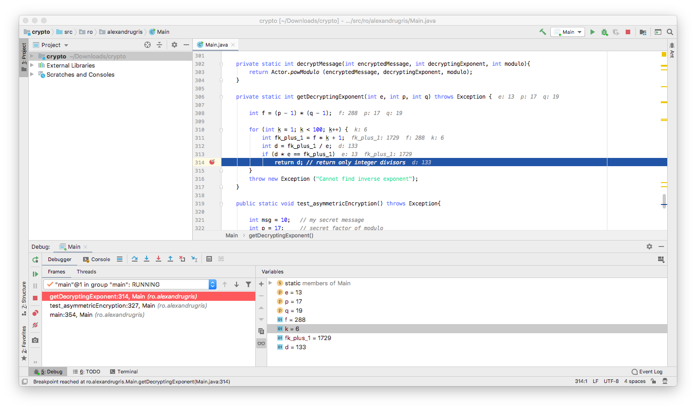
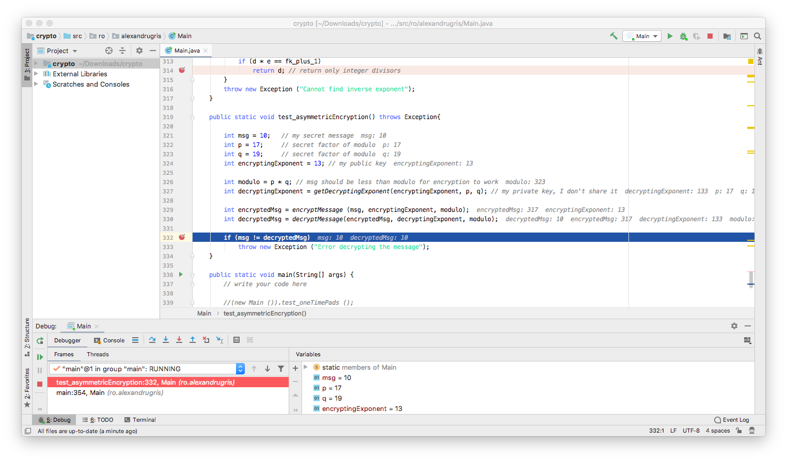

Introduction to Cryptography (Part 2)
This is the second part of Introduction to Cryptography. The post covers symmetric encryption with cypher block chaining, the principles behind DES and AES, asymmetric encryption with RSA and a little bit on validating authenticity.
Symmetric Encryption with Cipher Block Chaining (CBC)
Block cipher is a very simple concept. It acknowledges the practical impossibility of sending a purely random, equal in size to the message, secret of the one-time pads and addresses it. It splits the message into predefined size blocks, then encrypts each block individually. Cipher Block Chaining takes the concept even further by taking into account the ciphertext generated for the previous blocks when encrypting the current block.
For Block Ciphers, Shannon introduced two measures:
- Confusion: how much a change in the key leads to a change in the ciphertext
- Diffusion: how much a change in the text leads to a change in the ciphertext
We want both confusion and diffusion to be as high as possible.
To increase confusion, we want for a small change in the key to lead to a large change in the text.
If we were to apply a simple text XOR key on each block independently, one bit of change in the key leads to one bit of change in the ciphertext, thus a very low confusion. Therefore, a good CBC algorithm work in several encryption rounds on each block.
Similarly, we want a small change in the text to lead to a large change in the ciphertext. Therefore, we cannot simply apply the same key over and over the encrypted message, independently, block from block. That would encrypt the block itself, but patterns in the text would still be apparent when the same group of characters reappears. Therefore, we use the ciphertext from the previous block as a part of encryption of the current block. This ensures that every block in the message depends on all the previous blocks. Thus, a small change in the message early in the stream would lead to a large change of the ciphertext, spread all the way to the end, hence increasing diffusion.
Below is a very basic implementation of this concept, with a single XOR round and with block chaining.
private static byte[] initVector(int blockSize){
byte[] initVector = new byte[blockSize];
(new Random (42)).nextBytes (initVector); // given key
return initVector;
}
private static byte[] encryptDecryptCBC(byte[] msg, byte[]key, boolean encrypt){
int blockSize = key.length;
byte[] initVector = initVector (blockSize);
// for each block the encryption should be done as a series of rounds,
// but we are going to use a single XOR round for this example
byte[] currentBlock = new byte[blockSize];
for (int i = 0, j = 0; i<msg.length; i++){
// one simple XOR round and diffusion with previous block
byte v = (byte) (msg[i] ^ key[j] ^ initVector[j]);
currentBlock[j] = encrypt? v : msg[i];
msg[i] = v;
if (++j == blockSize){
initVector = currentBlock;
currentBlock = new byte[blockSize];
j = 0;
}
}
return msg;
}
private static byte[] encryptCBC(String s, String password){
byte[] msg = s.getBytes (StandardCharsets.US_ASCII);
byte[] key = password.getBytes (StandardCharsets.US_ASCII);
return encryptDecryptCBC (msg, key, true);
}
private static String decryptCBC(byte[] msg, String password){
byte[] key = password.getBytes (StandardCharsets.US_ASCII);
return new String(encryptDecryptCBC (msg, key, false));
}
/***
* Here it starts
*/
public static void test_CypherBlockChaining() throws Exception {
String myMsg = "This is a message which is long";
byte[] msg = encryptCBC (myMsg, "Hello World");
String ret = decryptCBC (msg, "Hello World");
if(!ret.equals (myMsg))
throw new Exception ("Wrong Algorithm");
}
One of the early implementations was DES, currently considered obsolete due to the short key length. A newer one is AES, which is run with keys 128, 192 or 256 bits. AES runs on blocks of 16 bytes and applies a series of rounds to to confuse the key, including operations like shifting rows, mixing rows, XOR-ing, side lookups. AES-256 is considered strong enough to encrypt government secrets.
When sending a message, the following order of operations must be kept:
- Compression
- Encryption
- Error correction
Compression reduces redundancy in the message. If encryption is applied before compression, due to diffusion which is aimed at masking redundant patterns, compression becomes ineffective. Error correction adds redundancy to the message. Thus, if applied it the same step as the encryption, as the DES algorithm did, it decreases the encryption strength. If applied before, it loses its meaning as accidental information loss can occur during transmission, not at encryption time.
Asymmetric Algorithms
The principle of asymmetric algorithms is simple. The emitter keeps a function ciphertext = f(text) to himself while giving the recipient its inverse text = f-1(ciphertext). In more practical terms, I want to give you a an encrypting exponent e and a modulus m so that you can message^e % m = ciphertext while I can ciphertext^d % m = message, where d is the decrypting exponent.
The principle of exponentiation in the modulo has been discussed in the previous post. In short, exponentiation in the modulo has the following interesting properties:
- the result "jumps around", so it is very hard to predict the root
- the exponentiation operation can be performed fast
- its inverse, the logarithm problem, is very time consuming
The code below exemplifies the algorithm. The modulo exponentiation function is described in the previous post. Important to note that each chunk of message we can encrypt with this process must be lower than modulo.
But how do we get the encrypting/decrypting exponent pairs and the modulo? The maths goes like this:
- We select the modulo
m = p * qwherepandqare two (large) prime numbers. - The formula for inverse assumes that
(message^e)^d % m = messagewhich is equivalent tomessage ^ (e * d) % m = message - Because we selected
m = p * q, we obtainmessage^(e * d) % p = message^(e * d) % q = message, which is true whenmessage < pandmessage < q. - This is equivalent to saying
message^(e * d - 1) * message % p = messagewhich looks very much like the Fermat's Little Theorem which tells us thatm^(p-1) % p = 1whenpis prime andmis not a multiple ofp - If we select
e * d = k * (p-1)wherekis a constant and plug it in point 4, we obtain(message^(p-1))^k * message % p = messagewhich is equivalent to1^k * message % p = messagewhich is equivalent tomessage % p = message. - If we proceed in an identical manner on the
qside, we gete * d - 1 = k * (p-1) * (q-1). So we need to findkandd, both integers, which satisfy the above equation.

Let's do just that:
private static int encryptMessage(int msg, int encryptingExponent, int modulo) throws Exception {
// if msg == modulo, exponentiation returns 0 => message is compromised
// from there on, it loops again through the same values => impossible to construct the msg
if(msg >= modulo)
throw new Exception ("Cannot encrypt messages larger than modulo");
return Actor.powModulo (msg, encryptingExponent, modulo);
}
private static int decryptMessage(int encryptedMessage, int decryptingExponent, int modulo){
return Actor.powModulo (encryptedMessage, decryptingExponent, modulo);
}
private static int getDecryptingExponent(int e, int p, int q) throws Exception {
// here we search blindly for this k,
// a better algorithm can be found in wikipedia
// (RSA and Extended Euclidean Algorithm)
int f = (p - 1) * (q - 1);
for (int k = 1; k < 100; k++) {
int fk_plus_1 = f * k + 1;
int d = fk_plus_1 / e;
if (d * e == fk_plus_1)
return d; // return only integer divisors
}
throw new Exception ("Cannot find inverse exponent");
}
public static void test_asymmetricEncryption() throws Exception{
int msg = 10; // [SECRET] my secret message
int p = 17; // factor of modulo, large prime - [SECRET]
int q = 19; // factor of modulo, large prime - [SECRET]
int modulo = p * q; // msg should be less than modulo for encryption to work [PUBLIC]
int encryptingExponent = 13; // my public key [PUBLIC]
// my private key [SECRET]
int decryptingExponent = getDecryptingExponent(encryptingExponent, p, q); /
// [PUBLIC]
int encryptedMsg = encryptMessage (msg, encryptingExponent, modulo);
// [SECRET]
int decryptedMsg = decryptMessage(encryptedMsg, decryptingExponent, modulo);
if (msg != decryptedMsg)
throw new Exception ("Error decrypting the message");
}

The algorithm above is a very rudimentary implementation of the RSA algorithm.
We've see in the previous post that, in order to solve the discrete logarithm problem and crack the Diffie-Hellman encryption, we need to perform a scan over the whole set of possible values, from 0 to modulo (variable COUNT is the modulo in our case):
for (int j = 0; j < COUNT; j++) {
if (Actor.initialPowModulo (j) == actor1PublicMessage[i]) {
crackedInternalRandoms[i] = j;
break;
}
}
Each extra bit added to the COUNT variable doubles the amount of work the algorithm is required to perform. Therefore, the complexity of cracking the code is O(2^no_of_bits_in_modulo).
In 2014 a paper has been published with an algorithm that would bring the discrete logarithm problem to significantly sub-exponential complexity. However, since in Diffie-Hellman the modulo is prime and in RSA it is a product of two prime numbers, the suggested heuristics from the paper does not (yet) apply.
Authenticity
If we want to validate that indeed a message comes from a specific person, we do the following:
Person A, originator:
- Hash the message with a hash function.
- Encrypt the hash with the hash with his / her private key
- Send the encrypted hash along with the message
Person B, recipient:
- Hash the message with the same hash function
- Decrypt the received message with Person A's public key
- Compare the two hashes - they should be identical.
The weakness is the hash function. If the hash function is easily reversible, a potential attacker could craft a message that has the same hash as the original message and pass it along with the originally encrypted hash. The message, at the recipient, would pass the validation.
Because of this, we need cryptographically strong hash functions. These functions work on the same principles as the CBC described earlier in this chapter. MD5, the first designed hash function, is no longer recommended for use, same for SHA-1 which came later. SHA-2 (SHA-256 and SHA-512) and SHA-3 are currently the gold standard in cryptography.
There is still an attack vector open - an attacker can generate a large number of messages that I am likely to sign and a similarly large number of messages that I would not likely sign. This increases the probability that he/she will find a pair of (likely-to-sign, unlikely-to-sign) and thus use my signature to validate his malicious message. Because of this, the protocol for using signatures requires that we never sign a message received from a 3rd party without altering it a little bit before, to generate another hash.